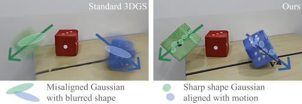

Kinematics-Driven Gaussian Shape Deformation for Blurry Monocular Dynamic Scenes
ICML, 2026
We introduce a kinematics-aware framework that links velocity to Gaussian covariance, modeling motion blur as motion-aligned deformation. By separating static/dynamic primitives, we enable robust 3D reconstruction from blurry monocular videos—without explicit motion supervision. Especially, we also present DEOs, a real-world dataset of deformable and elastic objects.